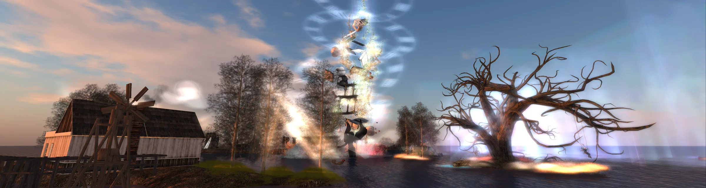

BLOCK VIEWER
Build your look,
block by block.
A Windows Second Life® client with a Vulkan renderer. Open source under GPLv3 — early 0.x for friends and testers.
In the client
The Second Life you know, with a Block shell.
Login with destinations and MFA when you need it. Nearby chat, IMs, groups, and voice. Inventory, appearance, and a built-in AO. People / radar with chat-range notices. Environment tools for personal lighting, Edit Sky, and Edit Water.
-
Login & destinations
Grid login, start locations, favourites, and MFA when the account requires it.
-
Vulkan world view
Modern GPU path for the regions you already visit — not a legacy OpenGL port.
-
Chat & voice
Nearby chat, IMs, groups, and voice — the social loop that keeps a session alive.
-
Inventory & appearance
Wear, search, outfits, and a built-in AO so your look stays yours.
-
People / radar
Who is nearby, with chat-range notices when someone steps into range.
-
Environment tools
Personal lighting, Edit Sky, and Edit Water when you want the scene your way.
-
Auto-update
Checks GitHub Releases for a new zip +
.sha256when you allow it. -
Six UI languages
English, Français, 日本語, Español, Deutsch, and Português (Brasil) in Preferences.

The grid
Same world. Your viewer.
Second Life regions, friends, and builds — through Block’s shell and Vulkan path.
Get the viewer
Download Block Viewer
Windows x64 portable zip. Unpack anywhere, run
block-viewer.exe. Optional Uninstall.cmd ships in the package.
- OS
- Windows 10 / 11 · 64-bit
- GPU
- Vulkan-capable graphics
- Config
%LOCALAPPDATA%\ape-squared\BlockViewer\
Start here
Three steps to the grid.
-
01
Download
Grab the Windows zip from Releases. One folder: exe, licences, README.
-
02
Launch
Unpack and run the viewer. A Vulkan-capable GPU is recommended.
-
03
Log in or demo
Connect to Second Life when ready, or use demo mode offline.
Community
Discord is opening.
We’re easing the server open for testers and friends. Jump in for releases, chat, and early access notes — bugs and features go through the testers hub and GitHub.
Lineage
Standing on open code.
Block Viewer starts from the open-source Aurora Viewer codebase. Separate product and brand — not an official Aurora release. Details on the foundation page and in Licences and notices.
Be first to open a block.
Download the latest build. Sister injector lives at Block-GPPI — different product, different download.